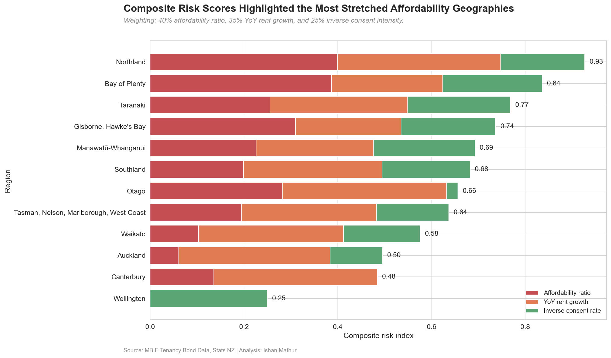
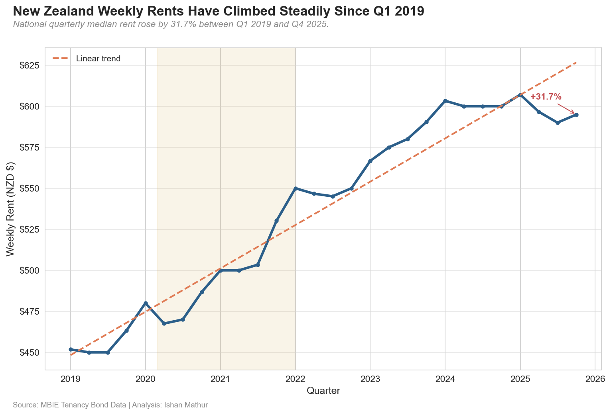
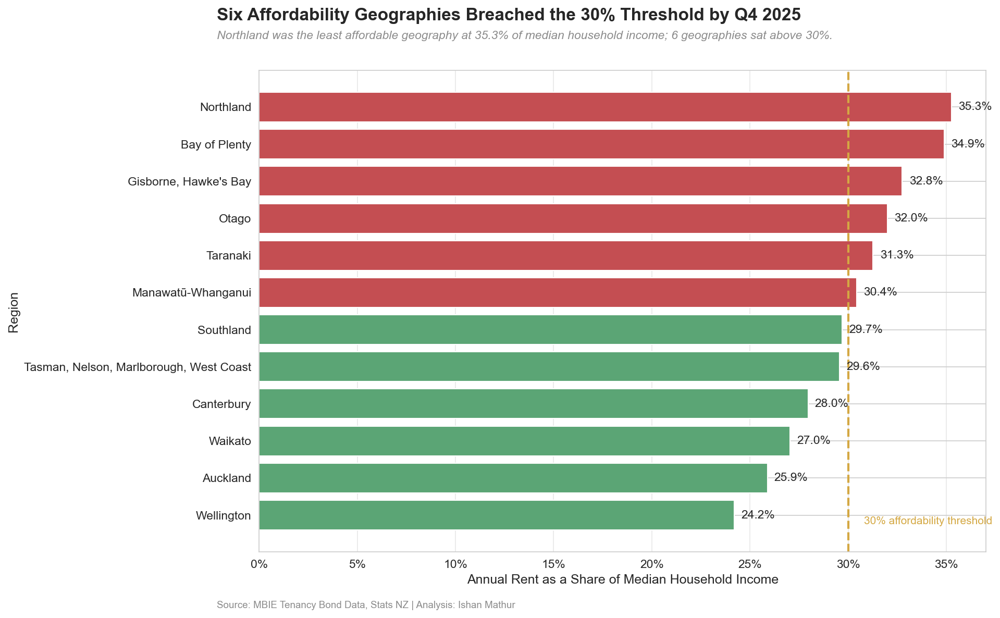
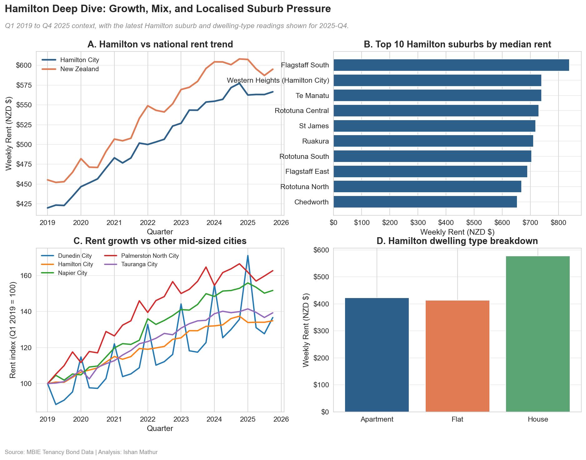
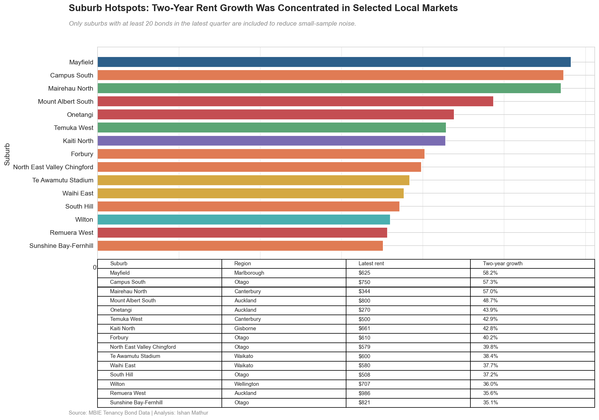

New Zealand Housing Affordability: Rental Market Pressure & Risk Analysis in Python
A Python case study using MBIE tenancy bond data, Stats NZ household income, and building consents to track where rent pressure is intensifying across New Zealand.

Project Overview
This project turns multiple public New Zealand housing datasets into a clear analytical story about rent pressure, affordability risk, and emerging hotspots. The workflow combines data cleaning, harmonisation, KPI modelling, chart production, and narrative reporting so the result reads like a hiring-manager-ready case study rather than a loose notebook dump.
Business Question
Where has rental pressure intensified most since 2019, which regions now sit above the typical 30% affordability threshold, and which local markets show the strongest signs of accelerating stress?
Key Findings
- National weekly rents rose by 31.7% from Q1 2019 to Q4 2025, climbing from $452 to $595 and showing how far the national market reset has moved.
- Auckland was the most expensive MBIE region in the latest quarter at $650 per week, versus $441 in West Coast, highlighting a wide regional spread.
- Six affordability geographies sat above the 30% threshold in the latest quarter, led by Northland at 35.3%.
- Hamilton City rents increased by 34.9% since Q1 2019, which was 3.2 percentage points faster than the national pace and makes Hamilton a strong local deep dive.
- Mayfield in Marlborough recorded the strongest two-year suburb rent growth among adequately sampled suburbs at 58.2%, showing how pressure is spreading beyond headline metro markets.
What Was Analysed
- National and regional rent trends to show how weekly rents shifted from Q1 2019 through Q4 2025.
- Affordability ratios combining quarterly rents with Stats NZ median household income to identify where rent burdens are stretching furthest.
- Local market deep dives focusing on Hamilton and Auckland to connect national signals to specific urban dynamics.
- Supply context using Stats NZ building consents to add directional evidence on market tightness.
- Suburb hotspots using SA2-level tenancy data to surface areas with strong recent rent acceleration.
Project Summary
The strongest part of this work is the way it moves from descriptive trends into prioritisation. It starts with headline rent movement, layers in affordability and supply, then closes with a composite risk view and suburb-level hotspot screening. That makes the analysis useful not only for explaining what changed, but also for showing where stakeholder attention should go next.
Skills Demonstrated
- Python data analysis with pandas
- Data cleaning and harmonisation
- Time-series KPI modelling
- Affordability and risk analysis
- Matplotlib and seaborn storytelling
- Notebook-to-portfolio packaging
Data & Tools
- Sources: MBIE tenancy bond data, Stats NZ household income, Stats NZ building consents
- Workflow: notebook-first analysis backed by reusable code in
src/ - Published on GitHub: code, notebook, processed datasets, executive summary, and charts
- Excluded from GitHub: raw MBIE and Stats NZ source files, which must be supplied locally to rerun the full pipeline
- Method note: household income for 2019-2022 is backcast from observed 2023-2025 levels
Analysis Highlights

National Rent Trends - The opening chart establishes the scale and consistency of rent growth across the period, making the later affordability discussion more concrete.

Affordability Ratios - This view shows where rents are taking the largest share of household income and which geographies are already above the 30% benchmark.

Hamilton Deep Dive - Hamilton stands out as a locally relevant market where rent growth has outpaced the national trend, making it a useful stakeholder-facing case study.
Affordability Risk Index - A composite score brings affordability, rent momentum, and supply intensity together to highlight where multiple stress signals overlap.

Suburb Hotspots - The suburb view makes the analysis more actionable by showing where recent rent acceleration is concentrated rather than stopping at regional averages.
Why This Project Is a Strong Portfolio Piece
This case study demonstrates more than chart production. It shows end-to-end analytical storytelling: sourcing and cleaning public data, reconciling mismatched geographies, building affordability metrics, and packaging the result into a reproducible Python workflow with stakeholder-ready outputs. It is also grounded in a live New Zealand issue, which gives the project strong local relevance alongside clear business and public-sector value.